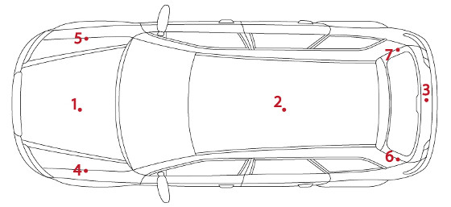
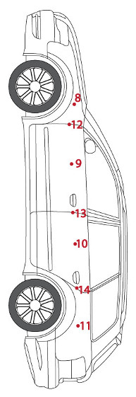
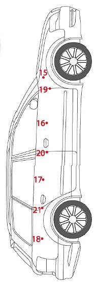

Sprawdź, co dostajesz po zleceniu inspekcji. Poniżej pełny raport z prawdziwej kontroli pojazdu krok po kroku.
Audi A4 B9 2.0 TFSI · 2018 · 95 500 km · Kielce, 27.10.2023Gotowy formularz, który wypełniam podczas każdej inspekcji. Możesz pobrać i zobaczyć jak jest zbudowany.
Każda inspekcja otrzymuje unikalny numer, datę i jest przypisana do konkretnego zleceniodawcy.
Weryfikuję dane rejestracyjne, VIN i ogólne parametry techniczne pojazdu na początku każdej inspekcji.
| Cecha | Wartość |
|---|---|
| VIN | WAUZZZ8K9JA123456 |
| Marka / Model | Audi A4 (B9) |
| Rok produkcji | 2018 |
| Silnik | 2.0 TFSI · 190 KM (140 kW) · Benzyna |
| Skrzynia biegów | Automatyczna S-tronic |
| Nadwozie / Kolor | Sedan · Czarny Metalik |
| Przebieg | 95 500 km |
| Liczba drzwi | 4 |
| Kraj pochodzenia | Niemcy |
| Data I rejestracji | 10.07.2018 |
| I rejestracja w Polsce | 05.02.2021 |
| Ostatni przegląd | 15.03.2023 |
Mierzę grubość powłoki lakierowej na dziesiątkach punktów karoserii. Oryginalny lakier mieści się w zakresie 90–160 μm. Każda wartość powyżej sugeruje szpachlowanie lub przemalowanie – to sygnał ostrzegawczy przed ukrytą szkodą.

Lokalizacja 1 – dach i maska (widok z góry)

Lokalizacja 2 – prawy bok pojazdu

Lokalizacja 3 – lewy bok pojazdu
| Punkt | Grubość lakieru (μm) | Szczelina (mm) | Ocena |
|---|---|---|---|
| 1 | 125 | 4.0 | OK |
| 2 | 130 | 3.8 | OK |
| 3 | 120 | 4.1 | OK |
| 4 | 115 | 3.9 | OK |
| 5 | 135 | 4.0 | OK |
| 6 – maska, str. kierowcy | 220 | 4.5 | Uwaga – naprawa |
| 7 | 128 | 3.9 | OK |
| Punkt | Grubość lakieru (μm) | Szczelina (mm) | Ocena |
|---|---|---|---|
| 8 | 130 | 4.2 | OK |
| 9 | 122 | 4.0 | OK |
| 10 | 118 | 4.1 | OK |
| 11 | 133 | 3.8 | OK |
| 12 | 127 | 4.0 | OK |
| 13 | 125 | 4.2 | OK |
| 14 | 130 | 4.1 | OK |
| Punkt | Grubość lakieru (μm) | Szczelina (mm) | Ocena |
|---|---|---|---|
| 15 | 120 | 3.9 | OK |
| 16 | 125 | 4.0 | OK |
| 17 | 130 | 4.1 | OK |
| 18 | 115 | 3.8 | OK |
| 19 | 128 | 4.0 | OK |
| 20 | 132 | 4.2 | OK |
| 21 | 126 | 4.0 | OK |
Weryfikuję czy wszystkie szyby są oryginalne (z rocznika pojazdu) lub zamienione – wymiana może oznaczać stłuczkę lub kradzież.
| Pozycja | Producent | Numer | Kod daty | Ocena |
|---|---|---|---|---|
| Szyba czołowa | Pilkington | AS1M1234DOT | 03/18 | Oryginalna |
| Przednia pasażera | Saint-Gobain Sekurit | E2 43R-001120 | 02/18 | Oryginalna |
| Tylna pasażera | Saint-Gobain Sekurit | E2 43R-001120 | 02/18 | Oryginalna |
| Tylna | AGC Automotive | E6 43R-00048 | 01/18 | Oryginalna |
| Tylna kierowcy | Saint-Gobain Sekurit | E2 43R-001120 | 02/18 | Oryginalna |
| Przednia kierowcy | Saint-Gobain Sekurit | E2 43R-001120 | 02/18 | Oryginalna |
| Trójkątna prawa | AGC Automotive | E6 43R-00048 | 01/18 | Oryginalna |
| Trójkątna lewa | AGC Automotive | E6 43R-00048 | 01/18 | Oryginalna |
Sprawdzam producenta, rozmiar, głębokość bieżnika (minimum prawne to 1.6 mm) oraz datę produkcji opon. Opony starsze niż 5–6 lat warto wymienić niezależnie od bieżnika.
| Parametr | Przód lewy | Przód prawy | Tył lewy | Tył prawy |
|---|---|---|---|---|
| Producent | Michelin | Michelin | Continental | Continental |
| Model | Pilot Sport 4 | Pilot Sport 4 | PremiumContact 6 | PremiumContact 6 |
| Rozmiar | 225/50 R17 | 225/50 R17 | 225/50 R17 | 225/50 R17 |
| Bieżnik zewnętrzny | 5.5 mm | 5.3 mm | 6.0 mm | 6.1 mm |
| Bieżnik środek | 5.8 mm | 5.6 mm | 6.2 mm | 6.3 mm |
| Bieżnik wewnętrzny | 5.4 mm | 5.2 mm | 5.9 mm | 6.0 mm |
| Data produkcji | 25/2021 | 25/2021 | 10/2022 | 10/2022 |
| Ocena | Dobry | Dobry | Dobry | Dobry |
Sprawdzam stan tapicerki, wszystkich elementów elektrycznych, klimatyzacji oraz wyposażenia. Wytarty fotel przy małym przebiegu to sygnał przekręconego licznika.
| Element | Stan | Uwagi |
|---|---|---|
| Tapicerka – zabrudzenia | Do odświeżenia | Lekkie |
| Tapicerka – przetarcia | Drobne | Fotel kierowcy, boczek |
| Tapicerka – pęknięcia | Brak | – |
| Plastiki progowe | Drobne rysy | Normalne użytkowanie |
| Oświetlenie (wszystkie) | Sprawne | – |
| Centralny zamek | Sprawny | – |
| Klimatyzacja | Uwaga | Działa, ale słabo chłodzi – wymagany serwis |
| El. składanie lusterek | Uwaga | Prawe składa się z oporem |
| Wycieraczki | Do wymiany | Pióra zużyte |
| El. szyby przód/tył | Sprawne | – |
| Podgrzewanie siedzeń | Sprawne | – |
| El. regulacja siedzeń | Sprawna | – |
| Kierownica wielofunkcyjna | Sprawna | – |
| Nawigacja / Multimedia | Sprawne | – |
| Szyberdach | Nie dotyczy | Brak w wyposażeniu |
Sprawdzam poziomy płynów, wycieki, ślady napraw powypadkowych na elementach strukturalnych oraz stan koła zapasowego.
| Element | Wynik | Uwagi |
|---|---|---|
| Poziom płynu chłodniczego | OK | W normie |
| Poziom oleju silnikowego | OK | W normie, barwa prawidłowa |
| Zawieszka wymiany oleju | Obecna | Ostatnia wymiana 12.03.2023, przy 88 000 km |
| Zawieszka wymiany rozrządu | Brak | Brak informacji – wymaga wyjaśnienia |
| Widoczne wycieki oleju | Brak | Sucho |
| Lakier komory silnika | Oryginalny | Bez śladów napraw powypadkowych |
| Lakier wnętrza bagażnika | Oryginalny | Bez śladów napraw powypadkowych |
| Koło zapasowe | Kompletny | Zestaw naprawczy |
Oceniam działanie skrzyni biegów, zawieszenia, hamulców, kierownicy i silnika w realnych warunkach drogowych – niektóre usterki ujawniają się dopiero podczas jazdy.
| Element | Wynik | Uwagi |
|---|---|---|
| Uruchomienie silnika | OK | Bezproblemowe |
| Zmiana biegów | OK | Płynna |
| Utrzymanie toru jazdy | OK | Pojazd stabilny |
| Tempomat | OK | Działa poprawnie |
| Hamowanie | OK | Skuteczne, bez wibracji |
| Przyspieszenie | OK | Dynamiczne, bez szarpnięć |
| Luz na kierownicy | Brak | Precyzyjne prowadzenie |
| Zawieszenie | Uwaga | Słyszalne stuki z przodu na nierównościach |
| Hamulec ręczny | OK | Działa poprawnie |
Inspekcja pojazdu na kanale serwisowym lub ścieżce diagnostycznej – oceniam amortyzatory, wahacze, przeguby, korozję i hamulce z bezpośrednim dostępem do podwozia.
| Element | Wynik | Uwagi |
|---|---|---|
| Osłona silnika od spodu | OK | Obecna, całość – lekko porysowana |
| Wycieki silnika od spodu | Brak | Sucho |
| Przekładnia kierownicza | OK | Sucha, bez luzów |
| Wahacze i tuleje | Uwaga | Luzy na przednich dolnych wahaczach |
| Układ napędowy (przeguby, półosie) | OK | Bez luzów, osłony całe |
| Łożyska kół | OK | Cicha praca |
| Amortyzatory (wizualnie) | OK | Suche, bez wycieków |
| Tarcze hamulcowe | Dobry | Grubość w normie, niewielki rant |
| Klocki hamulcowe | ~60% zużycia | Do wymiany w perspektywie |
| Przewody hamulcowe | Dobry | Bez spękań i uszkodzeń |
| Naprawy powypadkowe | Brak | Elementy konstrukcyjne nienaruszone |
| Korozja | Drobna | Powierzchowna na układzie wydechowym – typowa dla wieku |
Podłączam skaner diagnostyczny OBD i odczytuję błędy ze wszystkich sterowników pojazdu. Sprawdzam też faktyczny przebieg zapisany w ECU – to ochrona przed przekręconym licznikiem.
| Co sprawdzono | Wynik | Uwagi |
|---|---|---|
| Przebieg z ECU | 95 515 km | Zgodny ze wskazaniem licznika |
| Błędy aktywne | P0420 | Niska wydajność katalizatora (sporadyczny) |
Podsumowanie inspekcji – odpowiedź na trzy kluczowe pytania kupującego.
Pojazd z 2018 roku, silnik benzynowy 2.0 TFSI, automatyczna S-tronic, przebieg 95 500 km (potwierdzony). Regularnie serwisowany. Stwierdzone usterki: luzy na przednich wahaczach (konieczna naprawa), serwis klimatyzacji, obserwacja błędu katalizatora P0420, naprawa lakiernicza maski. Łączny koszt napraw szacowany na ok. 1 500–2 500 zł – uwzględnij to w negocjacjach z ceną wywoławczą.
Dojazd do klienta do 200 km od Kielc. Pakiety od 400 PLN. Umów się dziś.
+48 503 438 806 Zamów online